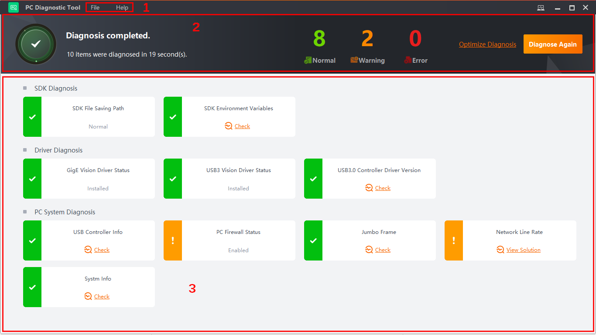

Tool Introduction
The PC diagnostic tool (hereinafter referred to as "the tool") helps you diagnose and repair the running environment when you use the Client and related SDKs.
The main page of the tool is shown below. See the table below for more details.

Figure 1 Main Page|
No. |
Section |
Description |
|---|---|---|
|
1 |
Menu Bar |
The menu bar provides the log file exporting, user manual, language settings, and tool version.
|
|
2 |
Real-Time Monitoring |
According to the severity, the diagnosis results are categorized into three types: normal, warning, and error. The number of normal results, warnings, and errors can be displayed in real time during the diagnosis process. See Diagnostic Process for details. |
|
3 |
Diagnosis Details |
You can check the detailed diagnosis results of the SDK, driver, and PC system. In this section, you can also take actions accordingly to improve their performance. See Diagnostic Process for details. |
Click  on the top right of the tool to check
the current memory and CPU usage of the PC.
on the top right of the tool to check
the current memory and CPU usage of the PC.